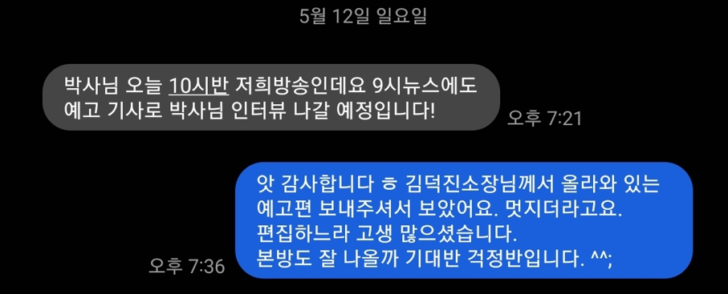
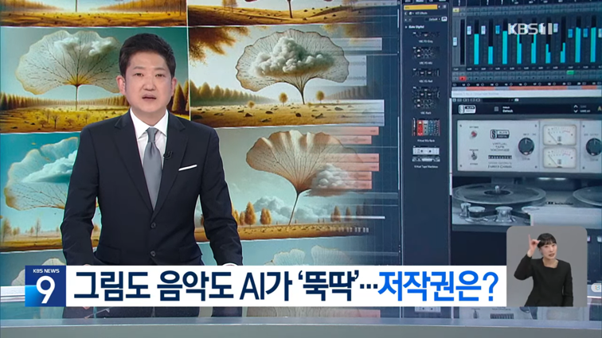
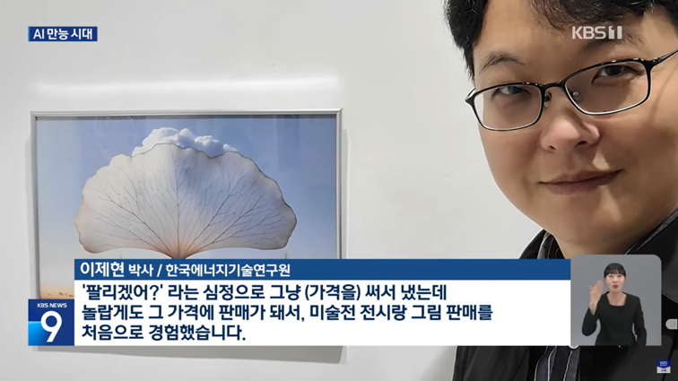
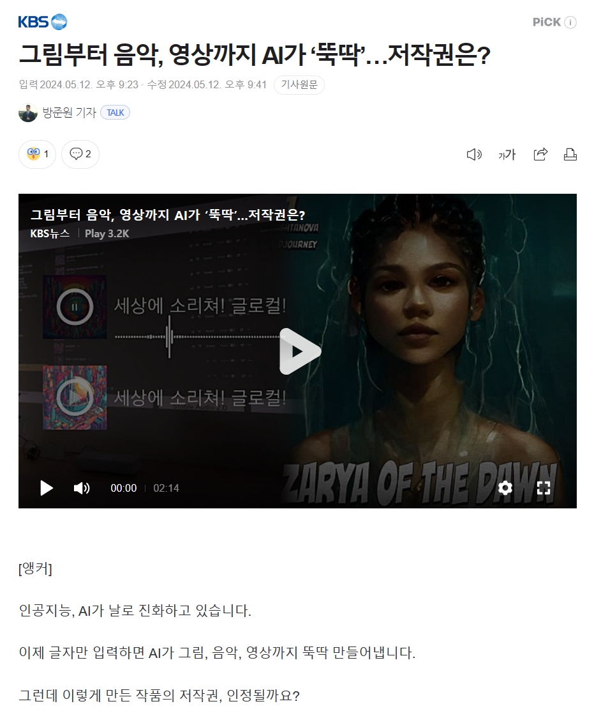
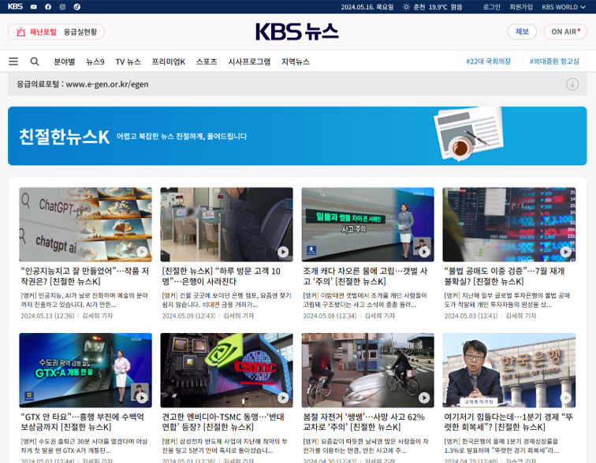
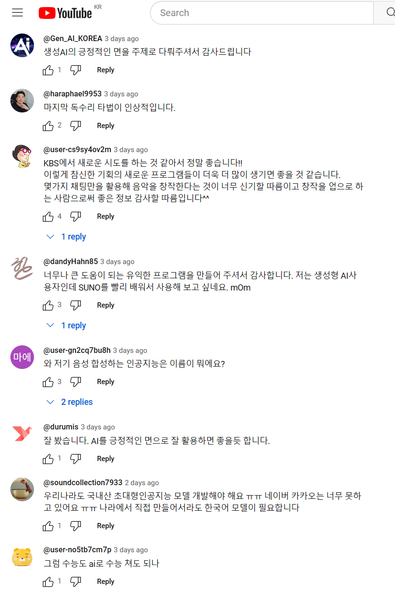
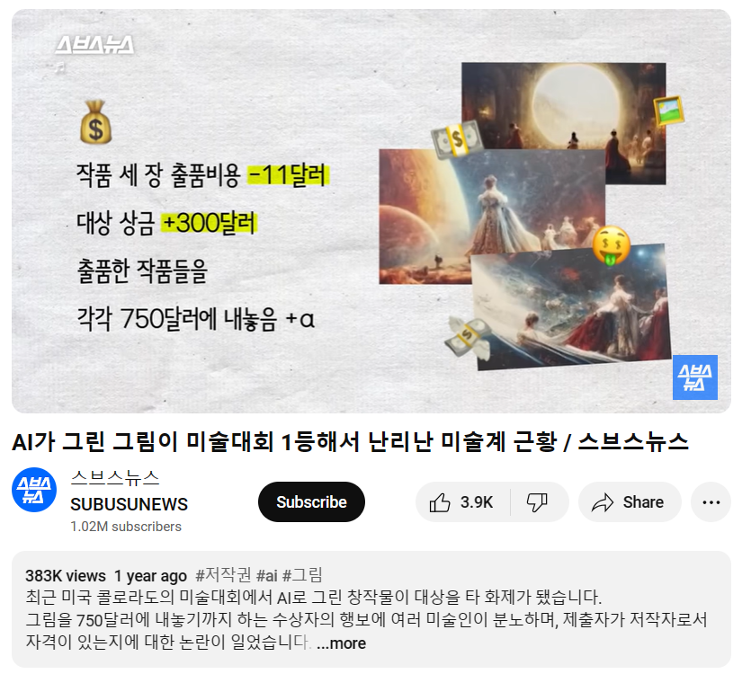
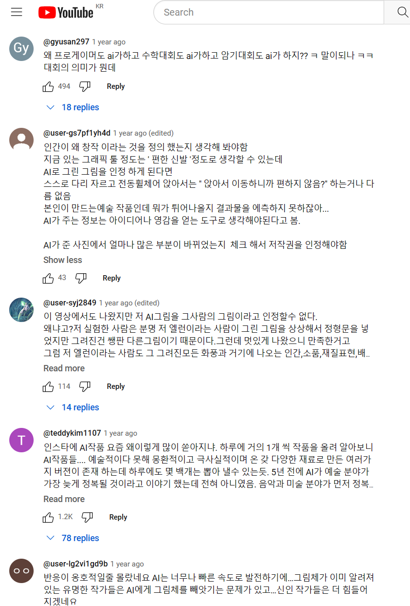
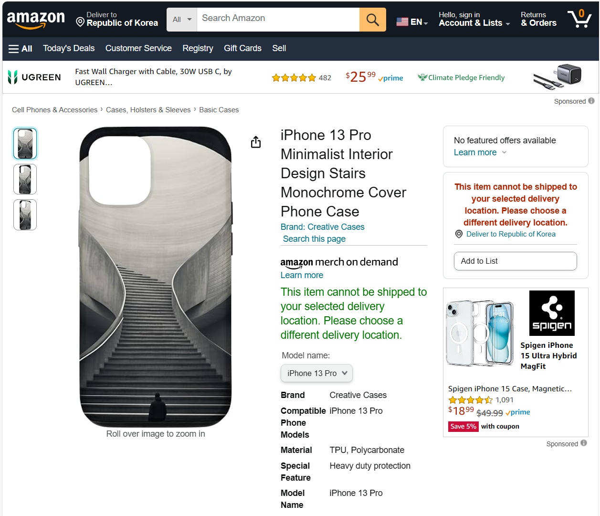
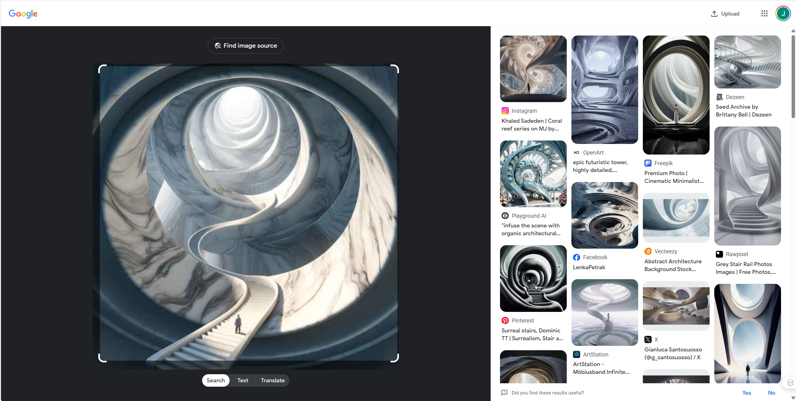

contributor: KBS 유동엽 기자
- 저의 AI 그림 전시와 판매가 KBS 기자님의 관심을 끌었나 봅니다.
- 시사프로그램 <더 보다>의 유동엽 기자님께서 연락을 주셔서 인터뷰를 진행했습니다.
- 잘 만들어주신 방송이 5월 12일 본방송과 9시 뉴스에 나왔습니다.
- 며칠 지난 지금 방송 및 당일 인터뷰 후기를 간략히 정리해 봅니다.
1. 인터뷰, 예고, 뉴스, 방송
- 4월 19일 연구원에 방문해주신 방송진과 함께 인터뷰를 진행했고,
- 5월 9일에 예고가 나갔습니다.
- 김형석 작곡가께서 문을 열어주신 덕에 방송에 대한 기대감이 한껏 높아졌습니다.
- 예고 영상: YouTube Link
- 5월 12일 방송 당일, 저녁 7시경 기자님께 문자를 받았습니다.
- 9시 뉴스에 나온다는 말씀이었는데, 깜짝 놀랐습니다.
- 세종시에서 열리는 축제에 가족과 함께 나와있었기 때문에 늦지 않게 서둘러 귀가를 했습니다.

- 9시 뉴스를 틀어놓고 가족들과 함께 기다렸습니다.
- 뉴스가 끝나갈 무렵, 스포츠 소식 직전에 “이어지는 시사프로그램 <더 보다>에서는…”이라는 멘트와 함께 짧게 소개될 줄 알았습니다.
- 의외로 뉴스 시작 후 20분이 지나갈 무렵 적지 않은 비중으로 소개되었습니다.
- YouTube 다시 보기 : (YouTube Link)
- 인터뷰를 마친 후 여러 날이 지났을 때, 인터뷰를 하셨던 기자님께서 “그림이 만들어진 과정을 모은 걸 고화질로 보내주시면 좋겠다”는 요청을 주셔서 보내드렸는데,
- 해당 그림이 뉴스 시작부터 나오더군요.


- 뉴스에 나올 거라고 부모님들께는 먼저 알려드렸지만, 연락을 드리지 않은 지인들로부터 연락이 오기 시작했습니다.
- 그리고 잠시 후 밤 10시 30분, KBS 시사프로그램 <더 보다>의 12회, 예술램프 인공지능?! 이라는 제목으로 방영되었습니다.
- YouTube 다시 보기 : (YouTube Link)
- 기대와 함께 오래 진행한 인터뷰가 어떻게 편집될지 걱정을 많이 했습니다.
- 소위 악마의 편집 이야기도 많이 들었기 때문에 더 그랬습니다.
- 다행히 전달하고자 하는 저의 생각과 주장을 너무 잘 담아주셨습니다.

- 저와 관련된 분량이 많다는 기자님의 언질이 있었습니다만,
- 실제로 40분 분량 중 저와 관련된 부분이 7분이 좀 넘을 정도로 비중이 크게 나왔습니다.
- 생성 인공지능은 아는 만큼만 써야 한다는 주장을 지속적으로 드리고 있는데 좋은 기회가 된 것 같습니다.

- 음악, IT, 법 등 여러 분야의 전문가들 인터뷰과 함께 어우러져 스토리를 탄탄하게 만들어주셔서 감사했습니다.
- 기자님을 포함해 다른 인터뷰이들과 한 자리에서 이야기를 나눈 느낌마저 들었습니다.
- 예술로 뻗어나가는 AI에 대해 많은 말씀을 담아준 제작진에게 다시 한번 감사 말씀을 드립니다.
- 시작과 끝을 35년 경력 김형석 작곡가의 호의적인 멘트로 담아주신 덕에 분위기가 매끄러웠다고 생각합니다.
2. 방송 후
2.1. 관련 보도
- 당일 9시 뉴스 보도와 거의 동시에 KBS에서 문서 기사도 함께 나갔습니다.
- Naver 뉴스 링크 : 그림부터 음악, 영상까지 AI가 ‘뚝딱’…저작권은?
- 종종 영상과 문서로 같은 뉴스를 볼 때가 있는데 이렇게 실시간으로 나가는 줄은 처음 알게 되었습니다.

- 그리고 방송 다음날(5.13.)친절한 뉴스K에서 영상을 인용해 해당 뉴스를 다루었습니다.
- YouTube 다시 보기 : (YouTube Link)

2.2. 댓글
인터뷰 요청을 받았을 때부터 악플을 어느 정도 예상했습니다.
일전에 강연에서 관련 언급을 했다가 미술계 종사자로부터 이메일을 직접 받은 경험도 있고,
감히 예술가와 입장을 바꾸어 생각해보면 수십년간의 노력을 부정당하는 느낌일 것 같았습니다.
방송 내용에는 문제가 없다고 생각했기 때문에,
이 정도로 차분하게 담아주셨는데도 달리는 악플은 어쩔 수 없는 거다라는 생각을 갖고 있습니다.
다행히 현 시점에서 본방, 뉴스, 기사 등에 별다른 악플은 보이지 않습니다.

- 반면, 1년 전에 나온 비슷한 기사에 달린 댓글은 공격적인 내용이 적지 않습니다.
- 무단표절과 관련된 이슈가 여전히 남아 있지만 공격성은 줄었습니다.
- 인식이 개선되었을 수도 있고, 작년의 폭발적인 부정적 반응이 다소 누그러졌을 수도 있습니다.
- AI가 그린 그림이 미술대회 1등해서 난리난 미술계 근황 / 스브스뉴스: : (YouTube Link)


3. 방송에 담기지 않은 이야기
- 방송 분량이 제한되어 있다 보니, 그리고 스토리를 매끄럽게 엮다 보니 모든 이야기가 담기지는 못했습니다.
- 방송에 담기지 않은 이야기 중 많은 이들과 공유하고 싶은 이야기를 하나 담고자 합니다.
- 생성 AI의 가장 큰 위험 중 하나가 무단 학습과 이에 따른 의도치 않은 표절입니다.
- 창작자는 독창적인 그림을 떠올리고 이를 프롬프트로 지시하더라도, AI가 학습한 정보를 바탕으로 그림을 형성하는 과정에서 과거에 학습한 그림이 나올 수 있습니다.
- 학습을 기반으로 하다 보니 어느 정도는 예견된 일이기도 하고, AI 예술은 표절이라는 주장의 근거가 되기도 합니다.
- 개인적으로는 인간도 비슷하지 않나? 라는 생각을 가지고 있습니다.
- 사람도 스승의 그림이 아니더라도 여러 디자인을 비롯한 상업미술 등 다양한 작가와 작품의 영향을 받습니다.
- 한 시대 여러 사람들이 집단적으로 영향을 주고 받으면 화풍이나 사조가 됩니다.
- 그럼에도 불구하고 결과물이 타인의 그림과 너무 비슷하면 싫습니다.
- 첫째, 자존심이 상하고 둘째, 내게 스승일 수 있는 타인에게 피해를 주고 싶지 않기 때문입니다.
- 그래서 프롬프트에 특정 화가나 화풍의 이름을 명시하지 않습니다.
- 프롬프트에 스타일을 지시할 때는 오마주나 패러디를 할 때 뿐입니다.
- 일전에 참석한 AI 작가들과의 모임에서도 생각이 비슷한 분들을 많이 만났습니다.
- 그런데 얼마 전, 제가 그린 그림과 상당히 유사한 그림을 만났습니다.
- 강의와 함께 포스터 그림 의뢰를 받았습니다. -제 강의 포스터에 한정해 의뢰를 수락합니다.
- 대리석 원기둥 옆면을 따라 대리석 계단이 나선형으로 놓여 있는 위를 한 사람이 올라가는 모습을 떠올리고 프롬프트를 입력했는데,
- 이와 조금 다르지만 대리석 구멍의 안쪽 면을 따라 놓인 계단으로 올라가는 그림이 나왔습니다.
- 의도와는 다르지만 이 그림도 괜찮고, 굳이 의도를 구현할 필요는 없어서 이를 토대로 포스터가 만들어졌습니다.
- 그리고 강의를 마친 언젠가 facebook 담벼락에서 상당히 유사한 그림을 발견합니다.
- unknown photographer라고 되어 있는 이 그림은 제가 이걸 보고 베꼈다고 해도 믿을 것 같았습니다.
- 뒤늦게라도 원작자를 찾기 위해 검색을 해 보았지만 찾을 수 없었습니다.
- 이 사진이 각인된 아이폰 케이스까지 버젓이 판매되는 걸 보면 굉장히 잘 알려진 사진이거나 원작자가 제품 제작에 참여했거나 실시권을 허가한 사진으로 보이는데, 끝내 알아내지 못했습니다.

- 구글 이미지 검색에 제가 만든 그림을 넣고 검색하면 상당히 유사한 이미지가 대량으로 발견되고,
- 이 중 적지 않은 수는 Midjourney, Playground AI 등 생성AI의 작품입니다.
- 제 의도와 관계없이 원작을 베낀 것처럼 느껴진다는 것에 이어 그저 그런 그림 중 하나라고 느껴져 기분이 좋지 않았습니다.

- 생성 AI로 그림을 그릴 때도 작가의 구상과 이를 구현하기 위한 프롬프트 작성, 수정, 작품 선별이 이루어집니다.
- 이런 새로운 형태의 노력을 감안할 때 저작권이 주어져도 충분하다고 느끼지만,
- 그 전에 의도치 않은 표절에 대한 고민이 함께 이루어져야 한다고 믿습니다.
- 이는 사람 간에도 음악과 미술에서 수없이 되풀이되어 온 문제입니다.
- 집단적으로 영향을 주고 받는 일을 사람은 해도 되고 AI는 안 된다는 논리도 빈약합니다.
- 그리고 사람을 닮아가는 생성 AI의 미래를 생각할 때 쉽지 않은 문제가 될 것입니다.
- 숙제가 많은 만큼 발전 가능성이 큰 분야라고 생각합니다.